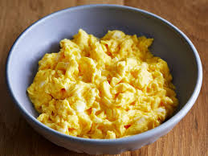

Fluffy Microwaved Scrambled Eggs
These light and fluffy scrambled eggs are made in the microwave for a quick and easy breakfast to start your day. Follow the technique in this easy 3-ingredient recipe for perfect results every time.
Looking for irresistibly fluffy scrambled eggs that are ready in mere minutes? Your microwave is the key! Don't believe us? Just try this top-rated recipe for microwave scrambled eggs.
Ingredients
- 4 large eggs
- 1/4 cup milk
- 1/8 teaspoon salt
Directions
- Break the eggs into a microwave-proof mixing bowl. Add milk and salt; mix well.
- Pop the bowl into the microwave and cook on high power for 30 seconds. Remove bowl, beat eggs very well, scraping down the sides of the bowl, and return to the microwave for another 30 seconds.
- Repeat this pattern, stirring every 30 seconds for up to 2 ½ minutes. Stop when eggs have the consistency you desire.
- Serve warm and enjoy!
Home